Breakthroughs in Band Topology#
How band structures acquire integer invariants: from the SSH chain, the
TKNN invariant and the Zak phase, through the Haldane and Kane-Mele models
and the tenfold way, to three-dimensional, crystalline, Weyl and
higher-order topological phases, and the real-space markers that detect
them without a Brillouin zone. It traces the ideas behind
tbkit.kspace’s Berry-phase tools, tbkit.topology and
tbkit.higher_order.
1979 – The Su-Schrieffer-Heeger (SSH) Model#
Su, Schrieffer, and Heeger showed that a 1D dimerized chain – alternating intracell (\(v\)) and intercell (\(w\)) bonds, modeling polyacetylene – hosts domain-wall solitons. Cut open into a finite chain, the same physics produces a pair of protected, exponentially localized zero-energy states, one at each end, whenever \(w>v\). It is the earliest and simplest example of the bulk-boundary correspondence that would come to define topological band theory: a bulk property predicting the existence of boundary modes.
Which phase the chain is in is visible in the geometry: it is set by whether the chain is cut so that the weak bond or the strong one sits at the end.
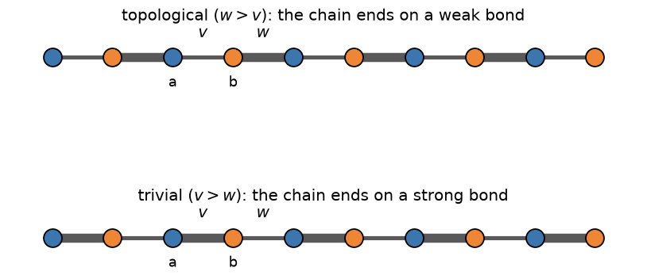
The bulk gap \(2\min_k|v+we^{-ik}| = 2|v-w|\) closes only at \(v=w\); for \(v<w\) the chain is topological (protected zero-energy edge modes under open boundaries), and for \(v>w\) it is trivial (no edge modes).
Implementation: built directly from tbkit.kspace.KSpace (the
Bloch form above) and tbkit.system.System.set_hopping_manual() (the
open, real-space chain exposing the edge modes) – no dedicated SSH
function is needed, since the general hopping-list framework already
covers it exactly.
References: W. P. Su, J. R. Schrieffer, and A. J. Heeger, “Solitons in Polyacetylene,” Phys. Rev. Lett. 42, 1698-1701 (1979).
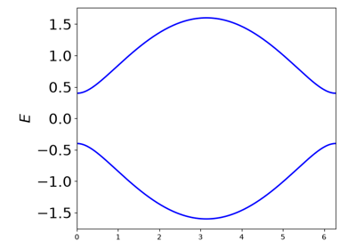
The SSH Model: Bulk-Boundary Correspondence
1980 – The Quantum Metric#
J. P. Provost and G. Vallee showed that the manifold of quantum states carries a natural metric – how distinguishable two neighbouring states are. For a Bloch band it combines with the Berry curvature into the quantum geometric tensor,
The metric bounds the curvature, \(\sqrt{\det g}\ge|\Omega_{xy}|/2\), so a Chern band has a minimal quantum geometry; its integral bounds the spread of the Wannier functions, and it sets the superfluid weight of flat-band superconductors (Peotta and Torma, 2015).
Implementation: tbkit.kspace.KSpace.quantum_geometric_tensor().
References: J. P. Provost and G. Vallee, “Riemannian Structure on Manifolds of Quantum States,” Commun. Math. Phys. 76, 289-301 (1980); N. Marzari and D. Vanderbilt, Phys. Rev. B 56, 12847 (1997); R. Roy, Phys. Rev. B 90, 165139 (2014).
Example: examples/topology/plot_quantum_geometry.py maps the metric
and the curvature of the Haldane model’s lower band, confirms the bound
at every k-point, and recovers the Chern number from the curvature.
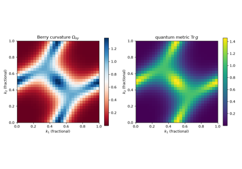
The Quantum Metric: The Geometry of a Bloch Band
1982 – The TKNN Invariant#
Thouless, Kohmoto, Nightingale, and den Nijs (TKNN) showed that a 2D band’s quantized Hall conductance is a topological invariant: the integral of its Berry curvature \(\Omega(\mathbf{k})\) over the Brillouin zone,
now called the (first) Chern number. Because \(C\) can only change when a bulk energy gap closes, it is invariant under any smooth, gap-preserving perturbation – the single idea that turned “band theory” into “topological band theory,” and the direct theoretical explanation for why the integer quantum Hall effect (measured by von Klitzing two years earlier) is quantized with such extraordinary precision.
Implementation: tbkit.kspace.magnetic_supercell() builds the
magnetic unit cell of a lattice threaded by a rational flux
\(p/q\) per unit cell, whose bands are the Hofstadter subbands;
tbkit.kspace.KSpace.berry_curvature() computes
\(\Omega(\mathbf{k})\) over a Brillouin-zone mesh by the
gauge-invariant Fukui-Hatsugai-Suzuki lattice method (the phase of a
product of overlaps between neighboring-plaquette occupied subspaces,
which needs no smooth gauge choice for \(u_{n\mathbf{k}}\) at all);
chern_number() is its sum divided by
\(2\pi\), returning an integer to within the mesh resolution.
References: D. J. Thouless, M. Kohmoto, M. P. Nightingale, and M. den Nijs, “Quantized Hall Conductance in a Two-Dimensional Periodic Potential,” Phys. Rev. Lett. 49, 405-408 (1982).
Example: examples/topology/plot_tknn_hofstadter.py confirms that
the Chern numbers of the square lattice’s Hofstadter subbands, at fluxes
1/3, 1/5, 2/5 and 3/7, are those of the TKNN Diophantine equation
\(r = qs_r + pt_r\).
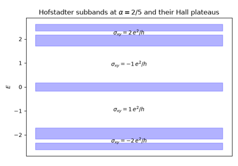
TKNN: The Quantized Hall Conductance of the Hofstadter Bands
1983 – The Thouless Quantum Pump#
Thouless asked what the TKNN invariant means for a 1D system rather than a 2D one, and found a direct physical answer: if a 1D insulator’s Hamiltonian is cycled slowly and periodically through a parameter \(\phi\) (a pump cycle) back to itself, the charge transported across any cross-section over one full cycle is exactly quantized,
an integer number of electrons per cycle, regardless of how the cycle is driven – provided the bulk gap never closes. The reason is exactly the TKNN argument one dimension down: treating the pump parameter \(\phi\) as a second, synthetic crystal momentum turns the 1D pump into a 2D Chern insulator on the \((k,\phi)\) torus, with \(Q\) equal to its Chern number. The idea now underlies “topological pumps” realized with cold atoms in modulated optical lattices, decades after the original proposal.
Implementation: no new code – a pump is simply an ordinary
tbkit.kspace.KSpace Bloch Hamiltonian built with the pump
parameter as a second reciprocal direction, so
chern_number() (1982, above) applies directly
and needs no special-casing for the synthetic-dimension trick.
References: D. J. Thouless, “Quantization of particle transport,” Phys. Rev. B 27, 6083-6087 (1983); M. J. Rice and E. J. Mele, “Elementary Excitations of a Linearly Conjugated Diatomic Polymer,” Phys. Rev. Lett. 49, 1455-1459 (1982) (the pumped model itself).
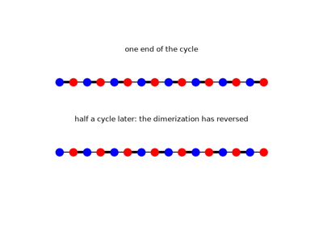
The Thouless Quantum Pump (Rice-Mele Model)
1984 – Diabolical Points: Conical Intersections and the Sign of the Eigenvector#
When can two levels of a quantum system be degenerate? Von Neumann and Wigner (1929) had counted the conditions: two for a real symmetric Hamiltonian, three for a complex Hermitian one. Without a symmetry, a degeneracy therefore does not occur along a one-parameter path – the levels avoid crossing – but at isolated points of a two-parameter family. M. Berry and M. Wilkinson found such points numerically in the spectra of triangular billiards, varying the triangle’s two angles, and named them diabolical points: near one, the two energy sheets form a double cone, a “diabolo”. The same year Berry showed that such a degeneracy is the source of a geometric phase: the real eigenvector of either level changes sign after one loop around it, a phase \(\pi\) that no choice of gauge can remove. Graphene’s Dirac points (1947, above) are diabolical points pinned by symmetry; Berry and Wilkinson’s are accidental, and move when the system is deformed.
Implementation: tbkit.exceptional.encircle() carries an eigenvector
around a loop in any two-parameter family (a KSpace, or a callable
returning a matrix) by parallel transport, and returns the phase it
comes back with; tbkit.exceptional.vorticity() and
discriminant_winding() are 0 around a diabolical
point, which tells it apart from an exceptional point (2015-2018, below).
References: M. V. Berry and M. Wilkinson, “Diabolical points in the spectra of triangles,” Proc. R. Soc. Lond. A 392, 15-43 (1984); M. V. Berry, “Quantal phase factors accompanying adiabatic changes,” Proc. R. Soc. Lond. A 392, 45-57 (1984); J. von Neumann and E. P. Wigner, “Über das Verhalten von Eigenwerten bei adiabatischen Prozessen,” Phys. Z. 30, 467 (1929).
Example: examples/topology/plot_diabolical_points.py builds a
10-site triangular flake whose hoppings along two bond directions play
the part of the triangle’s angles, with a potential that breaks every
mirror symmetry. It locates a degeneracy of levels 5 and 6 off the
symmetric lines, confirms the conical dispersion (gap proportional to the
distance in every direction), the avoided crossings along lines that miss
it, the sign change of the eigenvector (phase \(\pi\) around it, 0
around a loop that misses it, and vorticity 0), and that the point moves
continuously, without disappearing, as the potential is changed.
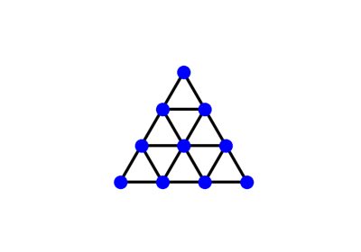
Diabolical Points: Conical Intersections in a Two-Parameter Family
1984/2007 – The Wannier Obstruction of Chern Bands#
D. J. Thouless pointed out that a band with a nonzero Chern number cannot be built from exponentially localized Wannier functions: these need a gauge of the Bloch states that is smooth and periodic over the whole Brillouin zone, and the Chern number counts the phase winding that forbids one. C. Brouder, G. Panati, M. Calandra, C. Mourougane and N. Marzari proved the converse in 2007: exponentially localized Wannier functions exist exactly when every Chern number vanishes. A Chern band’s Wannier functions decay only as a power law, and their spread diverges. The obstruction separates topological bands from atomic insulators, and it is the starting point of the later classifications by elementary band representations and fragile topology.
Implementation: tbkit.wannier.wannierize() reports the smallest
singular value of the projection onto the trial orbitals
(min_singular_value) and refuses an exactly singular one; its
gauge-invariant spread \(\Omega_I\) stays finite while the total
spread grows with the mesh.
References: D. J. Thouless, “Wannier functions for magnetic sub-bands,” J. Phys. C 17, L325-L327 (1984); C. Brouder, G. Panati, M. Calandra, C. Mourougane, and N. Marzari, “Exponential Localization of Wannier Functions in Insulators,” Phys. Rev. Lett. 98, 046402 (2007); T. Thonhauser and D. Vanderbilt, “Insulator/Chern-insulator transition in the Haldane model,” Phys. Rev. B 74, 235111 (2006).
Example: examples/topology/plot_wannier_obstruction_of_chern_bands.py
wannierizes the lower band of the Haldane model in its trivial and Chern
phases. It shows both trial orbitals failing exactly at K or K’ in the
Chern phase, the minimized spread converging in the trivial phase but
growing by about 0.3 per doubling of the mesh in the Chern phase (with
\(\Omega_I\) converged and the smallest projection falling as
\(1/N\)), and power-law tails \(|W|^2 \sim r^{-4}\) against
exponential ones.
1988 – The Haldane Model#
D. Haldane asked whether the integer quantum Hall effect requires a net magnetic field at all – and showed it does not. His model threads complex second-neighbor hopping \(t_2e^{i\phi}\) through a honeycomb lattice in a pattern with zero net flux per unit cell (opposite chirality on the two sublattices), yet nonzero local curvature that breaks time-reversal symmetry. The result is a Chern insulator, \(C=\pm1\), from lattice-scale “orbital magnetism” alone – the first concrete example of what is now called the quantum anomalous Hall effect, and the direct template for the Kane-Mele model below.
Implementation: built directly from tbkit.kspace.KSpace’s
general complex-hopping machinery (no dedicated function needed): real
nearest-neighbor hopping plus complex, sublattice-alternating
next-nearest-neighbor hopping, evaluated with
chern_number().
References: F. D. M. Haldane, “Model for a Quantum Hall Effect without Landau Levels,” Phys. Rev. Lett. 61, 2015-2018 (1988).
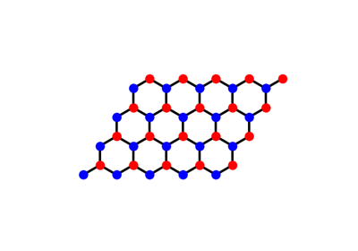
The Haldane Model: Berry Curvature and a Topological Phase Transition
1989 – The Zak Phase#
J. Zak showed that the Berry phase of a Bloch band carried once across the Brillouin zone, \(\gamma = \oint\mathbf{A}\cdot d\mathbf{k}\), is a property of the whole band, quantized to 0 or \(\pi\) by inversion symmetry – and that \(\gamma/2\pi\) locates the centre of its Wannier functions in the cell. Through King-Smith and Vanderbilt (1993) it became the modern theory of electric polarization, and its matrix generalization, the Wilson loop, the standard tool for computing topological invariants.
Implementation: tbkit.kspace.KSpace.berry_phase(),
wannier_centers() (the eigenphases of the
discrete Wilson loop, with the orbital positions included) and
wannier_flow() (hybrid Wannier centres across
the zone).
References: J. Zak, “Berry’s Phase for Energy Bands in Solids,” Phys. Rev. Lett. 62, 2747-2750 (1989); R. D. King-Smith and D. Vanderbilt, Phys. Rev. B 47, 1651 (1993).
Example: examples/topology/plot_zak_phase.py confirms that the SSH
chain’s Wannier centre sits on the strong bond – at \(1/4\) for
\(v > w\), \(3/4\) for \(w > v\) – a jump of the Zak phase by
\(\pi\) at the transition.
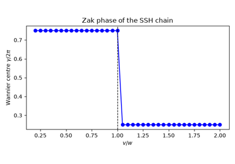
The Zak Phase: Where the SSH Chain’s Electrons Sit
1997 – The Tenfold Way#
A. Altland and M. Zirnbauer completed Dyson’s classification of random matrices: time reversal \(T\), particle-hole \(C\) (each squaring to \(\pm1\), or absent) and their product, the chiral symmetry \(S\), sort every Hamiltonian into exactly ten symmetry classes. Schnyder, Ryu, Furusaki and Ludwig, and Kitaev, then showed (2008-2009) that the class and the dimension alone decide which topological invariant a gapped phase can carry – the periodic table of topological insulators and superconductors.
Implementation: tbkit.kspace.KSpace.symmetry_error() checks a
(unitary or antiunitary) symmetry of the Bloch Hamiltonian;
tenfold_class() names the class.
References: A. Altland and M. R. Zirnbauer, “Nonstandard Symmetry Classes in Mesoscopic Normal-Superconducting Hybrid Structures,” Phys. Rev. B 55, 1142-1161 (1997); A. P. Schnyder, S. Ryu, A. Furusaki, and A. W. W. Ludwig, Phys. Rev. B 78, 195125 (2008); A. Kitaev, AIP Conf. Proc. 1134, 22 (2009).
Example: examples/topology/plot_tenfold_way.py classifies the
models of this gallery: the SSH chain (BDI, or AIII with complex
hoppings), the Haldane model (A), spinless graphene (BDI), the
Kane-Mele model (AII), and the Kitaev chain (BDI, or D).
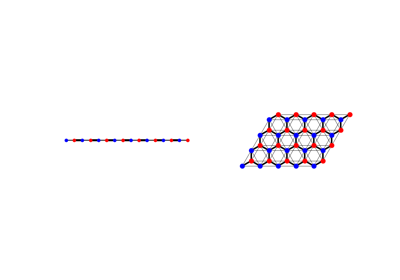
The Tenfold Way: Symmetry Classes of Tight-Binding Models
2005-2007 – The Kane-Mele Model and the Quantum Spin Hall Effect#
C. Kane and E. Mele showed in 2005 that adding intrinsic spin-orbit coupling to graphene – two time-reversed copies of Haldane’s model, one per spin, with opposite Chern number so the total Chern number vanishes – produces a new, time-reversal-symmetric topological phase protected by a \(\mathbb{Z}_2\) (rather than integer) invariant: the quantum spin Hall effect. A finite ribbon of this model hosts a Kramers pair of helical, counter-propagating, spin-momentum-locked edge states that cannot be gapped out by any time-reversal-symmetric perturbation – immune to backscattering because a spin-up right-mover has no same-momentum, same-spin partner to scatter into. Konig et al. observed exactly this two-terminal quantized conductance in HgTe/CdTe quantum wells in 2007, the first experimentally realized topological insulator of any kind.
Edge states need an edge, so the model is cut into a ribbon: periodic along one primitive vector, finite along the other. The shaded column is the repeating unit; the ribbon is that column tiled sideways, and its two open edges are where the helical states live.
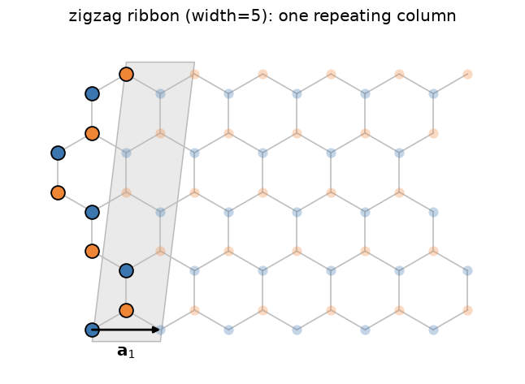
Implementation: tbkit.kspace.KSpace constructed with
spin=True gives every site a spin-1/2 degree of freedom, with
set_hopping()/set_onsite()
accepting 2x2 (Pauli) matrices – built from tbkit.kspace.PAULI –
for spin-dependent terms such as Kane-Mele’s \(i\lambda_{SO}\sigma_z\)
next-nearest-neighbor coupling or Rashba spin-orbit coupling;
tbkit.kspace.ribbon() cuts the open, finite-width ribbon that exposes
the helical edge states directly in the spectrum.
z2_invariant() computes the \(\mathbb{Z}_2\)
invariant from the flow of the hybrid Wannier centres (with or without
Rashba coupling), and tbkit.orbital.OrbitalSystem builds the
spinful model on a finite flake
(set_spin_orbit(),
set_rashba()).
References: C. L. Kane and E. J. Mele, “Z2 Topological Order and the Quantum Spin Hall Effect,” Phys. Rev. Lett. 95, 146802 (2005); C. L. Kane and E. J. Mele, “Quantum Spin Hall Effect in Graphene,” Phys. Rev. Lett. 95, 226801 (2005); M. Konig et al., “Quantum Spin Hall Insulator State in HgTe Quantum Wells,” Science 318, 766-770 (2007).
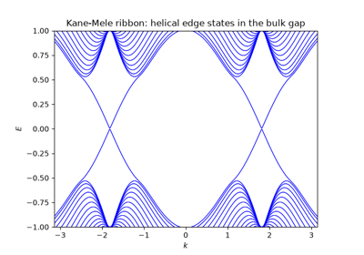
Helical Edge States of the Kane-Mele Ribbon
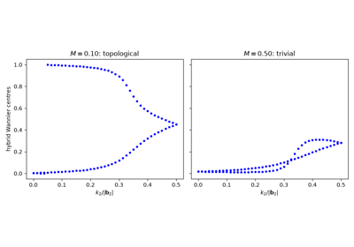
The Kane-Mele Z2 Invariant from Wannier-Centre Flow
2006/2009 – The Spin Chern Number#
The Chern numbers of the two spins of the Kane-Mele model are \(\pm1\), and their half-difference, the spin Chern number \(C_s\), counts its helical edge pairs. Rashba coupling mixes the spins, and the picture seems lost. D. N. Sheng, Z. Y. Weng, L. Sheng and F. D. M. Haldane (2006) found numerically, from spin-twisted boundary conditions, that \(C_s\) survives. E. Prodan (2009) gave the exact construction: project the spin onto the occupied bands, \(Ps_zP\). As long as its spectrum keeps a gap around zero, its positive and negative eigenvectors split the bands into two sectors with well-defined Chern numbers \(C_\pm\), and \(C_s = (C_+ - C_-)/2\). With time reversal, \(C_s\) modulo 2 is the \(\mathbb{Z}_2\) invariant, and \(C_s\) stays quantized when time reversal is broken too, as long as both gaps stay open.
Implementation: tbkit.kspace.KSpace.spin_chern_number(), built on
sector_chern_numbers() (the Chern numbers of
the two sectors of any Hermitian operator projected on a group of bands).
References: D. N. Sheng, Z. Y. Weng, L. Sheng, and F. D. M. Haldane, “Quantum Spin-Hall Effect and Topologically Invariant Chern Numbers,” Phys. Rev. Lett. 97, 036808 (2006); E. Prodan, “Robustness of the Spin-Chern Number,” Phys. Rev. B 80, 125327 (2009).
Example: examples/topology/plot_spin_chern_number.py confirms
\(C_\pm = \pm1\) without Rashba coupling, \(C_s = 1\) with it –
equal to \(\nu\) across a Rashba sweep, while the spin gap stays open and
\(s_z\) is not conserved – the drop to 0 where the bulk gap closes, and
\(C_s = 1\) with time reversal broken by an in-plane Zeeman field.
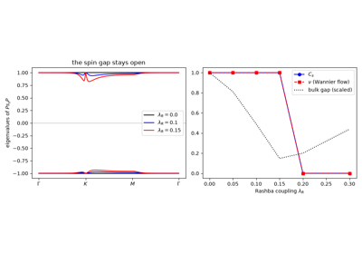
The Spin Chern Number: Quantum Spin Hall Without Spin Conservation
2007 – The Fu-Kane Parity Criterion#
L. Fu and C. Kane showed that with inversion symmetry the \(\mathbb{Z}_2\) invariant needs no Wilson loop: it is the product of the parities of the occupied Kramers pairs at the time-reversal-invariant momenta, \((-1)^\nu = \prod_i\delta_i\). A band inversion at one of them makes the insulator topological – the criterion that predicted Bi1-xSbx and Bi2Se3. The same year, Konig et al. confirmed the Bernevig-Hughes-Zhang prediction of the quantum spin Hall effect in HgTe quantum wells.
Implementation: tbkit.kspace.KSpace.parity_z2().
References: L. Fu and C. L. Kane, “Topological Insulators with Inversion Symmetry,” Phys. Rev. B 76, 045302 (2007); B. A. Bernevig, T. L. Hughes, and S.-C. Zhang, Science 314, 1757 (2006).
Example: examples/topology/plot_fu_kane_parity.py confirms, across
the phase diagram of the BHZ model, that the parity criterion and the
Wannier-centre flow give the same \(\nu\).
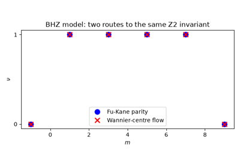
The Fu-Kane Parity Criterion: Z2 from Inversion Eigenvalues
2007/2009 – Three-Dimensional Topological Insulators#
L. Fu, C. Kane and E. Mele, J. Moore and L. Balents, and R. Roy showed that the \(\mathbb{Z}_2\) topology of the quantum spin Hall effect survives in three dimensions: a time-reversal-invariant insulator has four \(\mathbb{Z}_2\) indices, and an odd strong index \(\nu_0\) forces an odd number of Dirac cones onto every surface – metallic, spin-momentum-locked surface states that no time-reversal invariant perturbation can gap. Hsieh et al. observed them by photoemission in Bi1-xSbx (2008); Xia et al. and Zhang et al. then found a single cone in Bi2Se3 (2009). The tight-binding counterpart of a photoemission map is the spectral function of the surface of a semi-infinite crystal (the surface Green’s function, see the 1985 entry of Breakthroughs in Building and Solving Models) – no finite slab, so the surface states are never mixed with those of an opposite surface.
Implementation: tbkit.kspace.KSpace.surface_spectral_function()
(surface or bulk, either side, any primitive vector as surface normal);
z2_indices_3d() gives the four indices
\((\nu_0;\nu_1\nu_2\nu_3)\) from the Wannier-centre flow on the six
time-reversal-invariant planes, and
parity_z2() the strong index of
inversion-symmetric models.
References: L. Fu, C. L. Kane, and E. J. Mele, “Topological Insulators in Three Dimensions,” Phys. Rev. Lett. 98, 106803 (2007); J. E. Moore and L. Balents, Phys. Rev. B 75, 121306(R) (2007); R. Roy, Phys. Rev. B 79, 195322 (2009); D. Hsieh et al., Nature 452, 970 (2008); Y. Xia et al., Nat. Phys. 5, 398 (2009); H. Zhang et al., Nat. Phys. 5, 438 (2009).
Example: examples/topology/plot_3d_topological_insulator.py
confirms the four indices of a cubic model across its phases – trivial,
strong, the weak \((0;111)\) and strong \((1;111)\) – an empty
bulk gap, a single surface Dirac cone of velocity 1 at
\(\bar\Gamma\) (at \(\bar{M}\) when the band inversion moves to
\(R\)), and no surface state in the trivial phase.
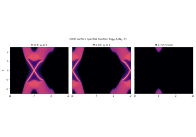
Three-Dimensional Topological Insulators: the Surface Dirac Cone
2008 – The Entanglement Spectrum#
H. Li and F. D. M. Haldane showed that the entanglement between two halves of a topological ground state carries more than a number. The spectrum of the reduced density matrix, \(\rho_A = e^{-H_E}/Z\), reproduces the edge spectrum at the cut, as if the cut were a physical edge. For free fermions the entanglement Hamiltonian \(H_E\) is quadratic (I. Peschel, 2003), and its levels follow from the eigenvalues \(\xi_n\) of the correlation matrix restricted to one half. L. Fidkowski, and A. Turner, Y. Zhang and A. Vishwanath (2010), showed that topology then forces entanglement modes inside \((0, 1)\): a mode pinned at \(\xi = 1/2\) at each cut of a chiral-symmetric chain, and a branch that flows across the whole interval with the momentum along the cut of a Chern insulator. The diagnostic depends on the ground state alone, not on the basis of the Hamiltonian, and needs no physical edge.
Implementation: tbkit.topology.entanglement_spectrum() (finite
samples, any region) and tbkit.kspace.KSpace.entanglement_spectrum()
(k-resolved, for ribbons and supercells).
References: H. Li and F. D. M. Haldane, “Entanglement Spectrum as a Generalization of Entanglement Entropy,” Phys. Rev. Lett. 101, 010504 (2008); I. Peschel, J. Phys. A 36, L205 (2003); L. Fidkowski, Phys. Rev. Lett. 104, 130502 (2010); A. M. Turner, Y. Zhang, and A. Vishwanath, Phys. Rev. B 82, 241102(R) (2010).
Example: examples/topology/plot_entanglement_spectrum.py confirms
two modes at \(\xi = 1/2\) (to \(10^{-10}\)) for half of a
topological SSH ring and none near 1/2 in the trivial phase, and the
k-resolved spectrum of a Haldane cylinder filling \((0.1, 0.9)\) in the
Chern phase and staying out of it in the trivial one.
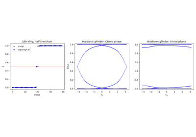
The Entanglement Spectrum: Edge States Without an Edge
2008/2012 – Topological Crystalline Insulators and Mirror Chern Numbers#
J. Teo, L. Fu and C. Kane (2008) showed that a crystal symmetry can protect a topology that time reversal misses. On a plane of the zone invariant under a mirror, the mirror commutes with \(H(\mathbf{k})\), the bands split into mirror sectors, and the mirror Chern number \(n_M = (C_{+i} - C_{-i})/2\) is an integer whose parity is the \(\mathbb{Z}_2\) index of the plane. L. Fu (2011) called insulators protected this way topological crystalline insulators, and T. Hsieh, H. Lin, J. Liu, W. Duan, A. Bansil and L. Fu (2012) predicted that SnTe is one: \(n_M = 2\), all \(\mathbb{Z}_2\) indices zero, and surface Dirac cones on the mirror-symmetric surfaces. Tanaka et al., Dziawa et al. and Xu et al. observed them the same year in SnTe and Pb1-xSnx(Se, Te).
Implementation: tbkit.kspace.KSpace.mirror_chern_number() (a
mirror operator with \(M^2 = \pm1\), checked to commute with
\(H(\mathbf{k})\) on the chosen plane).
References: J. C. Y. Teo, L. Fu, and C. L. Kane, “Surface States and Topological Invariants in Three-Dimensional Topological Insulators: Application to Bi1-xSbx,” Phys. Rev. B 78, 045426 (2008); L. Fu, Phys. Rev. Lett. 106, 106802 (2011); T. H. Hsieh, H. Lin, J. Liu, W. Duan, A. Bansil, and L. Fu, “Topological Crystalline Insulators in the SnTe Material Class,” Nat. Commun. 3, 982 (2012); Y. Tanaka et al., Nat. Phys. 8, 800 (2012); P. Dziawa et al., Nat. Mater. 11, 1023 (2012); S.-Y. Xu et al., Nat. Commun. 3, 1192 (2012).
Example: examples/topology/plot_mirror_chern_number.py confirms
\(\nu = n_M\) modulo 2 on the mirror planes of a 3D topological
insulator, then \(n_M = 2\) with all four \(\mathbb{Z}_2\) indices
zero for two coupled copies, and surface states across the bulk gap on
the mirror line of their (100) surface, absent in the trivial phase.
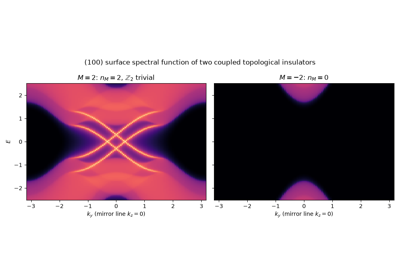
Mirror Chern Numbers: a Topological Crystalline Insulator
2008/2009 – The Axion Angle and the Topological Magnetoelectric Effect#
In an insulator, a magnetic field can induce a polarization, \(\mathbf{P} = \frac{\theta}{2\pi}\frac{e^2}{h}\mathbf{B}\), through the axion term \(\frac{\theta e^2}{2\pi h}\mathbf{E}\cdot\mathbf{B}\) of the electromagnetic Lagrangian (F. Wilczek 1987). X.-L. Qi, T. Hughes and S.-C. Zhang (2008) and A. Essin, J. Moore and D. Vanderbilt (2009) found that for Bloch electrons \(\theta\) is the Chern-Simons integral of the Berry connection of the occupied bands. It is defined modulo \(2\pi\), and time reversal or inversion pin it to 0 or \(\pi\): \(\theta = \pi\) is the 3D topological insulator, a quantized magnetoelectric response. Breaking those symmetries (a magnetic topological insulator, an antiferromagnet) frees \(\theta\), and a cycle of Hamiltonians changes it by \(2\pi\) times the second Chern number, the 4D quantum Hall effect.
Implementation: tbkit.kspace.KSpace.axion_angle() integrates the
second Chern form along a gapped path of a value-function parameter
(gauge invariant: no smooth gauge is needed).
References: F. Wilczek, “Two applications of axion electrodynamics,” Phys. Rev. Lett. 58, 1799 (1987); X.-L. Qi, T. L. Hughes, and S.-C. Zhang, “Topological field theory of time-reversal invariant insulators,” Phys. Rev. B 78, 195424 (2008); A. M. Essin, J. E. Moore, and D. Vanderbilt, “Magnetoelectric Polarizability and Axion Electrodynamics in Crystalline Insulators,” Phys. Rev. Lett. 102, 146805 (2009).
Example: examples/topology/plot_axion_angle.py pumps a lattice
Dirac model through a cycle: \(\theta\) goes from 0 at the trivial
point to \(\pi\) at the topological one and \(2\pi\) at the end
(\(C_2 = 1\)), within \(10^{-3}\pi\), matching the strong
\(\mathbb{Z}_2\) index at both time-reversal symmetric points, while a
trivial model’s \(\theta\) stays at 0.
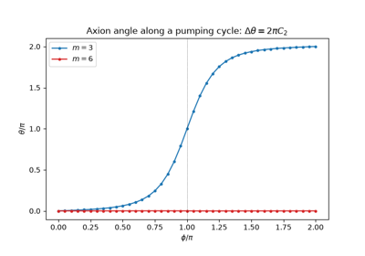
The Axion Angle and the Topological Magnetoelectric Effect
2010 – The Bott Index#
T. Loring and M. Hastings found a Chern number for finite samples without translation symmetry. On a torus the positions are defined only modulo the sides, but their exponentials \(e^{2\pi iX_{1,2}}\) are well defined. Projected on the occupied states, \(\tilde U\) and \(\tilde V\), they almost commute in an insulator, and the winding of their commutator, \(B = \frac{1}{2\pi}\mathrm{Im}\,\mathrm{Tr}\log(\tilde V\tilde U\tilde V^\dagger\tilde U^\dagger)\), is an integer: the Bott index. It equals the Chern number of a clean crystal, and it applies to disordered lattices, amorphous solids and quasicrystals, where it locates the topological Anderson transitions. It complements the local Chern marker below, which needs open edges and a bulk average.
Implementation: tbkit.topology.bott_index() (any Hermitian
Hamiltonian on a torus, e.g. from tbkit.kspace.KSpace.finite_ham()
with periodic=True, and its orbital positions).
References: T. A. Loring and M. B. Hastings, “Disordered Topological Insulators via C*-Algebras,” EPL 92, 67004 (2010); T. A. Loring, Ann. Phys. 356, 383 (2015).
Example: examples/topology/plot_bott_index.py confirms, on a Haldane
torus, a Bott index equal to the Chern number across the phase diagram,
an integer for every disordered sample, and a value of 1 up to disorder
\(W = 5\) (more than twice the clean gap) that drops to 0 for
\(W \geq 8\).
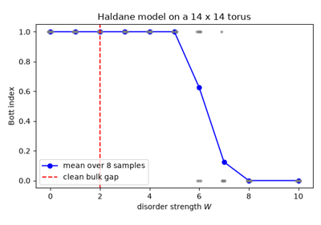
The Bott Index: the Chern Number of a Disordered Torus
2011 – The Local Chern Marker#
R. Bianco and R. Resta showed that the Chern number, an integral over the Brillouin zone, is also a local property of the ground state: the marker \(C(\mathbf{r}) = -\frac{4\pi}{a}\mathrm{Im}\langle\mathbf{r}|PxQyP|\mathbf{r}\rangle\), built from the projector on the occupied states of a finite sample, equals the Chern number in its bulk and compensates at its edges. It applies where no Brillouin zone exists – disordered, amorphous or quasicrystalline samples – and follows the topological Anderson transitions of disordered Chern insulators.
Implementation: tbkit.system.System.get_local_chern_marker().
References: R. Bianco and R. Resta, “Mapping Topological Order in Coordinate Space,” Phys. Rev. B 84, 241106 (2011).
Example: examples/topology/plot_local_chern_marker.py confirms, on
a Haldane flake, a bulk marker equal to the Chern number with a total of
zero, robust to weak disorder and destroyed by strong disorder.
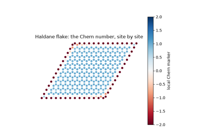
The Local Chern Marker: Topology Without a Brillouin Zone
2011/2015 – Weyl Semimetals#
Wan, Turner, Vishwanath and Savrasov predicted that band touchings of a new kind – Weyl points, where two bands meet linearly in every direction, each a monopole of Berry curvature – exist in real 3D crystals. In 2015 Xu et al. and Lv et al. observed them in TaAs, through their surface signature: open Fermi arcs. Every plane of constant \(k_z\) is a 2D insulator whose Chern number jumps across a Weyl point; each plane with \(C \neq 0\) contributes a chiral surface state, and together they draw the arc between the projected Weyl points.
Implementation: 3D KSpace models (prim_vec as three 3-tuples);
tbkit.topology.find_weyl_points() locates the Weyl points (gap
minima on a mesh, Newton refinement) with their chiralities, the Berry
flux through a small sphere around each;
chern_number() of a plane of the zone
(plane, k_fixed); tbkit.kspace.ribbon() cuts a slab.
References: X. Wan, A. M. Turner, A. Vishwanath, and S. Y. Savrasov, “Topological Semimetal and Fermi-Arc Surface States in the Electronic Structure of Pyrochlore Iridates,” Phys. Rev. B 83, 205101 (2011); S.-Y. Xu et al., Science 349, 613 (2015); B. Q. Lv et al., Phys. Rev. X 5, 031013 (2015).
Example: examples/three_dimensions/plot_weyl_semimetal.py finds
two linear Weyl points of chirality \(\mp1\), confirms that
\(C(k_z)\) jumps by the chirality across each (\(|C| = 1\) between
them, 0 outside),
and zero-energy surface states of a slab only between the projected
Weyl points.
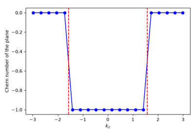
Weyl Semimetals: Monopoles of Berry Curvature and Fermi Arcs
2017 – Quantized Electric Multipole Insulators and Higher-Order Topology#
The topological insulators above all announce themselves by states one dimension below the bulk: edge states of a 2D insulator, surface states of a 3D one. W. A. Benalcazar, B. A. Bernevig and T. L. Hughes showed that a crystal can instead have gapped edges and protected states two dimensions down, at its corners. Their model – four orbitals per square cell, intra- and inter-cell hoppings \(\gamma\) and \(\lambda\), a \(\pi\) flux per plaquette – has no Chern number and no bulk dipole, but a quantized electric quadrupole moment \(q_{xy} = 1/2\) for \(|\gamma| < |\lambda|\). The invariant lives in the Wannier functions: the Wilson loop along \(x\) splits the occupied bands into two gapped Wannier sectors, and a second, nested Wilson loop of one sector along \(y\) gives the Wannier-sector polarization \(p_y^{\nu_x^-} = 1/2\). On a finite square it binds a fractional charge \(\pm e/2\) and a zero-energy state to each corner. Corner states were observed in 2018 in a phononic metamaterial, microwave circuits and topolectrical circuits, and higher-order topology has since been found in bismuth and in many crystalline insulators.
Implementation: tbkit.higher_order:
bbh_model(),
wannier_bands() (Wannier bands and sector
states from the Wilson loop at every base point, over a mesh
diagonalized with one vectorized Bloch sum),
wannier_sector_polarization() (nested Wilson
loop), quadrupole_moment(), and
corner_charges() of a finite flake
(finite_ham()).
References: W. A. Benalcazar, B. A. Bernevig, and T. L. Hughes, “Quantized electric multipole insulators,” Science 357, 61-66 (2017); “Electric multipole moments, topological multipole moment pumping, and chiral hinge states in crystalline insulators,” Phys. Rev. B 96, 245115 (2017); M. Serra-Garcia et al., Nature 555, 342-345 (2018); C. W. Peterson et al., Nature 555, 346-350 (2018); S. Imhof et al., Nat. Phys. 14, 925-929 (2018); F. Schindler et al., Nat. Phys. 14, 918-924 (2018).
Example: examples/higher_order/plot_quadrupole_insulator.py
confirms gapped Wannier sectors \(\pm\nu_x(k_y)\),
\(p_y^{\nu_x^-} = q_{xy} = 1/2\) for \(|\gamma| < |\lambda|\)
and 0 beyond, four zero-energy states in the gap of a \(16\times16\)
flake, and corner charges \(\pm 1/2\) (to \(2\cdot10^{-3}\))
that vanish in the trivial phase.
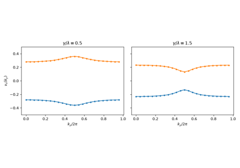
Quantized Electric Quadrupole Insulators: the Benalcazar-Bernevig-Hughes Model